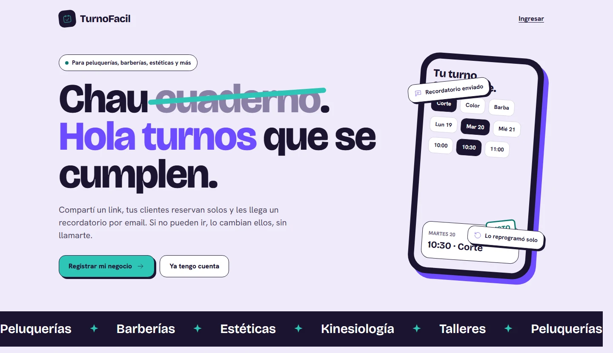

← Todos los proyectos
02 / Caso real
TurnoFacil
Turnos online para peluquerías, barberías y estéticas. Es mi propio producto: lo pensé, lo diseñé, lo programé y lo publiqué.
- Tipo
- Producto propio
- Para
- Negocios de servicios
- Tecnología
- Django · PostgreSQL · MercadoPago
- Año
- 2026
Pantallas de TurnoFacil

47archivos de pruebas automáticas
6módulos del sistema
Qué necesitaba
Muchos negocios de servicios siguen dando turnos por WhatsApp y anotándolos en un cuaderno.
Se pisan horarios, la gente se olvida y el dueño pasa el día con el teléfono en la mano. TurnoFacil le da al negocio un link para que sus clientes reserven solos.
Qué construí
- Registro del negocio con verificación por email.
- Servicios con su duración y profesionales con sus horarios.
- Reserva online desde el celular, sin que el cliente cree una cuenta.
- Recordatorio por email un día antes del turno.
- El cliente reprograma o cancela solo, hasta 2 horas antes.
- Planes con prueba gratis y cobro por MercadoPago.
- Límite de intentos de ingreso, 47 archivos de pruebas y CI en GitHub.